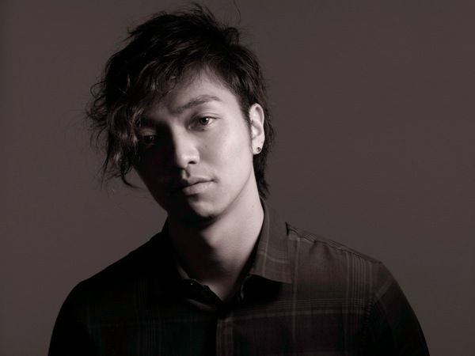

三浦大知
No Entertainment, No Life.
1987.8.24生まれ、沖縄県出身。 Folder のメインボーカルとして1997 年にデビュー。 2005 年3 月にシングル「Keep It Goin' On」でソロ・デビュー。 天性の歌声とリズム感を持ち、コレオグラフやソングライティング、楽器も操るスーパーエンターテイナー。 抜群の歌唱力と世界水準のダンスによるそのパフォーマンスが注目を集め、2012年には初の日本武道館が10分でSOLD OUT。2013 年には、初の横浜アリーナ単独公演を大成功させる。ミュージックビデオの祭典「MTV VMAJ 2014」にて“ベストR&B賞” 受賞や、ヨーロッパ最大の音楽授賞式「2014 MTV EMA」にて“ベスト・ジャパン・アクト” に選出など国内外で高く評価されている。
OFFICIAL SITE